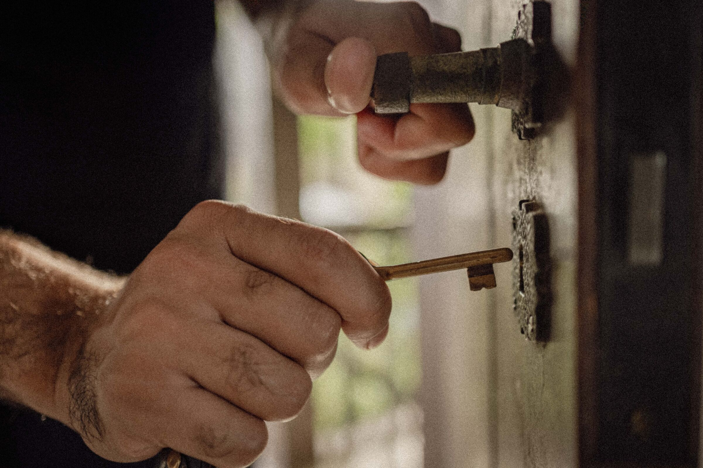

Trabalhos
Casamentos · Ensaios · Retiros · Experiências

HOTÉIS · POUSADAS · VILLAS
Com hotéis e pousadas, o cliente é o lugar
Ali o trabalho muda de natureza: não é uma pessoa que se filma, é um lugar que precisa ser sentido antes da chegada. Esses projetos têm a sua própria seleção.
Ver os projetos de hotelariaA sua história pode ser a próxima.
Se você quer guardar um momento antes que o tempo o modifique, a gente conversa.
Falar comigo